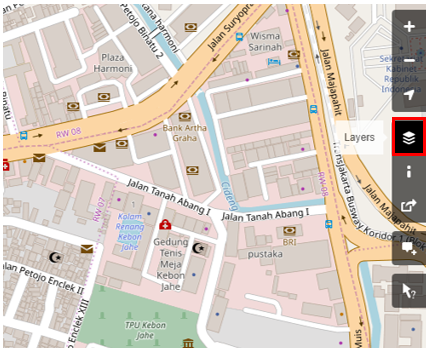
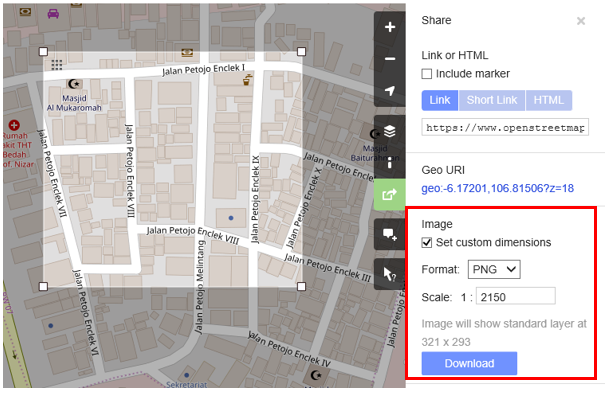
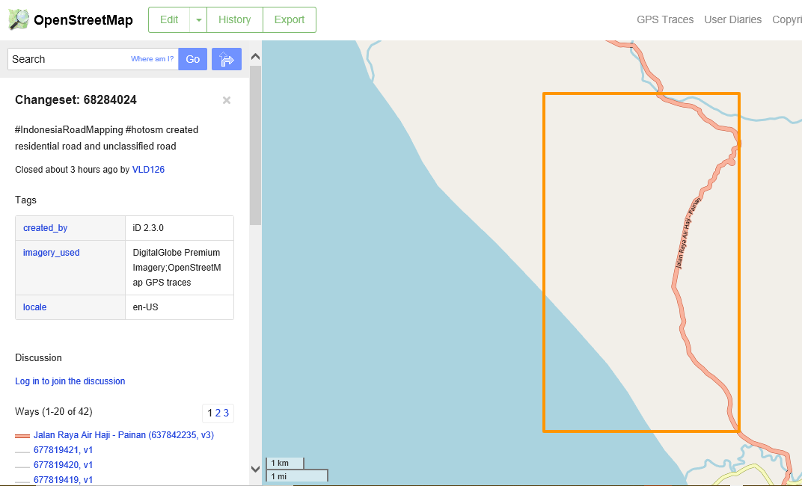
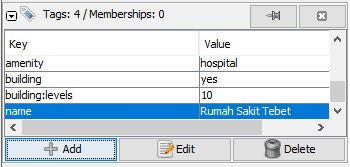
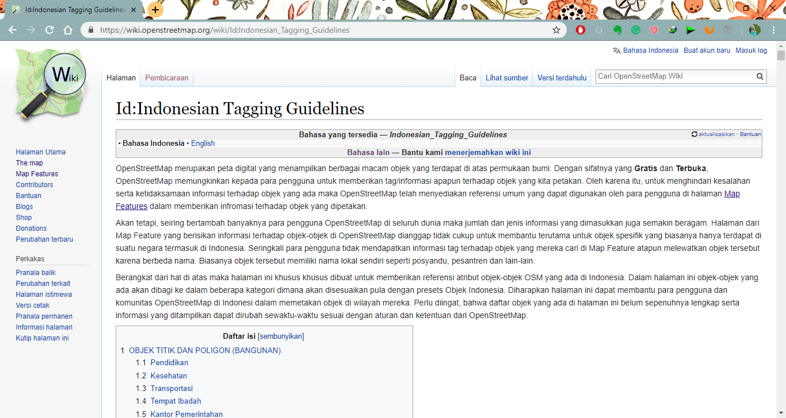

Getting started with OpenStreetMap
Objective:
- To be able to operate and navigate the OpenStreetMap website
- To be able to see object information in OpenStreetMap
- To be able to create share link in OpenStreetMap
- To be able to save images from OpenStreetMap
- To be able to create user account in OpenStreetMap
- To be able to understand the basic concept of attribute in OpenStreetMap
- To be able to understand history in OpenStreetMap
After you understand the basic of OpenStreetMap in the previous module, you can immediately start using OpenStreetMap. In this module you will start to get to know the OpenStreetMap site, create an OSM account, and find out the menu buttons and how to use them.
I. Visit the OpenStreetMap website
To be able to visit OpenStreetMap (OSM) site, make sure your computer is connected to the internet network. The steps to visit OpenStreetMap site are as follows:
- Open the web browser in your computer such as Mozilla Firefox, Google Chrome, Internet Explorer, Safari, etc.
- Type www.openstreetmap.org in the address bar at the top of the window and press Enter.
- When the page has finished loading, you should see the page below:

II. Navigate the map
In the main view of the OpenStreetMap website, you will see a large map in it. You must be able to navigate the map so you can go to a location that you want. Here are the ways to navigate the map on OpenStreetMap:
- Use the left mouse to drag the map view. Left-click on your mouse, then hold and drag the map to the location that you want. If you don't have a mouse, you can press and hold the right touchpad and then move the cursor.
- Use (+) and (-) button in the upper right corner of the map to zoom in and zoom out the map view. You also can use your mouse scroll-wheel to zoom your map. Scroll your mouse up to zoom in, while scroll down to zoom out.
- To search the location based on the name, type the location name on the Search box in the upper left side on the screen. You can type it in the search column, then press Enter or click Go. After that a Search Results box will appear below the search column, then you can choose and click on the search. The map will automatically move to the location you chose.
- To display your current location, you can go to the map panel to the right of the map and click Show My Location button. Then, the map will automatically display your current location point (blue dot). Make sure to enable the GPS on your laptop or computer to allow OSM to get your current location.
III. Change different style options for the map
OpenStreetMap contains geographic data from all over the world. Although stored in one database, the data can be displayed in several styles. The steps to change style map in OSM are as follows:
- Click Layers button in the right panel on the map.

OSM has four types of layers with different functions, namely:
- Standard: This layer shows all the objects on the OSM map.
- Cycle Map : This layer emphasizes cycling routes and pedestrian roads.
- Transport Map: This layer emphasizes transportation routes on the map such as highways and bus stop.

- Humanitarian: This layer emphasizes important objects or amenities on the map such as school, hospital, etc.
IV. See the object information in OpenStreetMap
In the OpenStreetMap page, besides see the current location and navigate the map, you also can see the feature information using Query Features. The steps to use Query Features are below:
- Click on Query Features button on the panel in the right. After you clicked it, you should see the question mark on your cursor. This indicates that the query features function is activated.
-
Now you can choose an object or location that you want to identify. For this example, we click on a governmental office building (Dinas Kesehatan) in Jakarta.
-
You should see a box appears in left corner that displays Nearby Features and Enclosing Features options. Nearby Features shows the description of any object that is closest to the location of your chosen point, while Enclosing features shows all the object information that have a close range location with your chosen point. Try to click one feature in the Nearby Features, click Governmental office Dinas Kesehatan for this example.
- After you clicked it, the information detail about Dinas Kesehatan building will appear in the left box. The information displayed is a tag or object attribute regarding general information objects such as object names, addresses, building levels, and others.
V. Share with link in OpenStreetMap
You can share links of your OpenStreetMap maps to others for various purposes, such as sharing the location of your current position with your colleagues and so on. To be able to share OpenStreetMap maps, the steps are as follows:
- Click the Share button on the right panel, then the Share column will appear.
- Check the Include marker to add the location marker point. You can move or drag the marker point to the desired location. Just click and hold the location marker then you drag to the desired location point. Another way is to shift the map so that the location marker is in the position you want.

- Once the marker position has fixed, you can copy the link in the Link box and share the link according to your needs. You can also copy a shorter version of the link in the Short Link box or copy the HTML code in the HTML box.
VI. Export map as an image
Besides changing the layer map, you also can export the map as an image and choose the various format file such as .png, .jpg, .svg, and .pdf. The steps to export the map are as follows:
- Click on the Share icon in the right of your map. Then the Share column will appear on the right side of your screen.

- After that, specify the area on the map that you want to export as an image. Give a check mark on the Set custom dimensions box in the Image section, then adjust the size of the box or adjust the scale in the Scale section.
Note : You can only export map as image if you set the Standard Layer view. If your map does not use the Standard Layer, you need to change it first on the Layers menu.
- You can choose the format of the export image in the Format dropdown menu. After that, click Download button to download the image and save the image to your folder location.

VII. See the editing history in OpenStreetMap
When you edit objects or make changes to OpenStreetMap, you can see the editing history of objects in that area. The steps to see editing history are as follows:
- You can see the information by clicking on the History menu button on the top left of the map.
- After that, the Changesets column will appear at the bottom of the Search box and orange boxes will appear on the map that indicates which areas have just been edited.
Changeset is a version of every change uploaded by OSM users. The information that we can see in the Changesets column is as follows:
- Changeset comment. It is recommended that you write the short comment when uploading changes or changeset. Comments can contain information about any changes that you made or specific hashtags.
- Upload time information.
- OSM username.
- Changeset number. This number is a unique number as the changeset identity.

- You can click one of the changeset on the changeset list or you can immediately select the orange box on the map. After you select one of the changeset, you will get details about the changeset.

VIII. Create an OpenStreetMap Account
You have seen the display and main menus from the OpenStreetMap website, now you will learn how to create an account at OpenStreetMap and make the first contribution on OpenStreetMap. The steps are:
- Click Sign Up on the OpenStreetMap page. You should see a new page that look like this:

-
There are five boxes on this page that you need to fill in to register an account with OSM. Firstly, enter your email address in the first two boxes. You should enter the same email address in both boxes. Later, you will need to open your email to confirm your account with OpenStreetMap.
-
In the third box, enter the username that you would like to have. If you try to use a simple name, it is likely that someone has already claimed the name. You will not be able to choose a username that someone else has chosen before, so pick the available name for your username.
-
Enter a new password in the fourth and fifth boxes. You should enter the same password in both boxes and the password. You should not use an important one such as the password for your email. After you have completed all the boxes, click Sign Up at the bottom of the page.
At this stage, you have successfully registered yourself on the OpenStreetMap site, but your account is still not active yet. To activate it, the steps that must be taken are as follows:
- Open the new tab on your browser and open your email.
- If everything was successful with your registration, you should see an email from OpenStreetMap in your inbox.
- Open the email. Click on the link that is identified below:
- After that, a new tab of OSM page will appear in your browser. If everything went well, congratulations you already have an OSM account!
Note : If a problem occurs, a problem message will appear. Make sure that the email you entered is the same as in the first two boxes and your password. If the box for the user name is red then someone else has already used the name and you have to look for another name.
- On the OpenStreetMap page, click Log In in the upper right corner. Enter your OpenStreetMap username and password then press Enter. You should now be logged in and you will see your username on the top right of the OpenStreetMap site.
Congratulations! If you have done all the steps in this section, you already have an OpenStreetMap account and already know how to navigate the OpenStreetMap website.
IX. The basic concept of OpenStreetMap attribute
-
The attribute concept on object
When you draw an object as a point, line, or polygon in OSM, you still need to add information about the object such as object name, address, or other supporting information. This information will help other users when using OSM data for various purposes. Information provided by users on OSM objects is called an attribute or tag.
An attribute/tag is like a label that you can place on an object. For example, if you draw a square, this is only a square without any object information. But you can add attributes to describe that object, for example you draw a square that is is a building; the name of the building is “Tebet Hospital”; 10 level building.
-
Components in OpenStreetMap attribute data
You can add as many attributes / tags as you want to an object. Attributes are stored as a pair of text, named Key and Value. Key is general information that explains the function of an object. In one key, it can consist of many values. For example schools, mosques, and hospitals have key=amenities (important facilities). Although the three objects have different types of functions, but all three objects have the same key. Whereas Value is information that more specifically explains the type of an object. Because this value describes specific information about an object, so that one type of value can only describes the type of the object itself. Not the same as a key that can explain general information about the object. In OpenStreetMap, an attribute is added by formatting a key-value pair that represents physical features on the ground, for example:

In the example above, there are four kinds of key & value attributes, including object amenities for hospital (amenity = hospital), building objects (building = yes), building level 10 (building:levels = 10) and object name Tebet Hospital’ (name = Tebet Hospital).
-
World and Indonesian OpenStreetMap tagging guidelines
For providing information on the object that you mapped, you need to ensure that the information is correct and suitable with OpenStreetMap rules. You need to make sure the reference is correct if you want to describe features by tag. OpenStreetMap has provided a special Wikipedia page that you can refer to. You can see the page on the Map Features Wiki page at https://wiki.openstreetmap.org/wiki/Map_Features.
Pages from Map Features that contain inforation about objects in OpenStreetMap are considered not enough to help especially for specific objects that usually only exist in a certain country, including Indonesia. Sometimes users do not get enough information about the object tag and they end up skipping the object because of different names.
Usually objects in Indonesia have their own local names such as Posyandu (health service for children and infants), Pesantren (islamic boarding school), and others. You do not need to be confused in searching for and memorizing attribute lists because you can see a list of object attributes that you can see on the Wikipedia page https://wiki.openstreetmap.org/wiki/Id:Indonesian_Tagging_Guidelines

The Wikipedia page was specifically created to provide references to OSM objects attributes in Indonesia. On that page, the objects will be divided into several categories which will be adapted from the objects in Indonesia.

SUMMARY
If you can follow and practice all the sections in this chapter, then you have succeeded in creating an OSM account, operating and navigating the OpenStreetMap website. In addition, you have also successfully shared OSM map images and shared links to other people. In the next chapter you will learn how to use Java OpenStreetMap (JOSM).